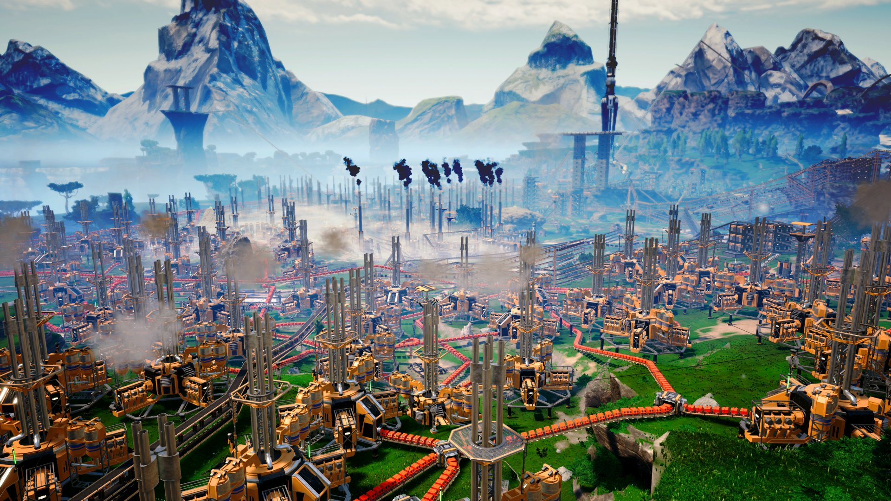
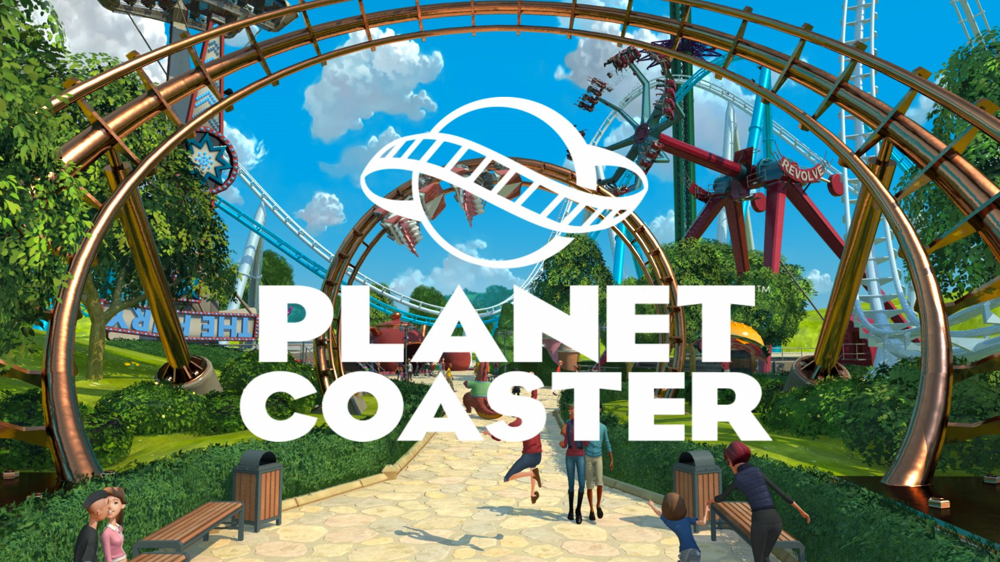
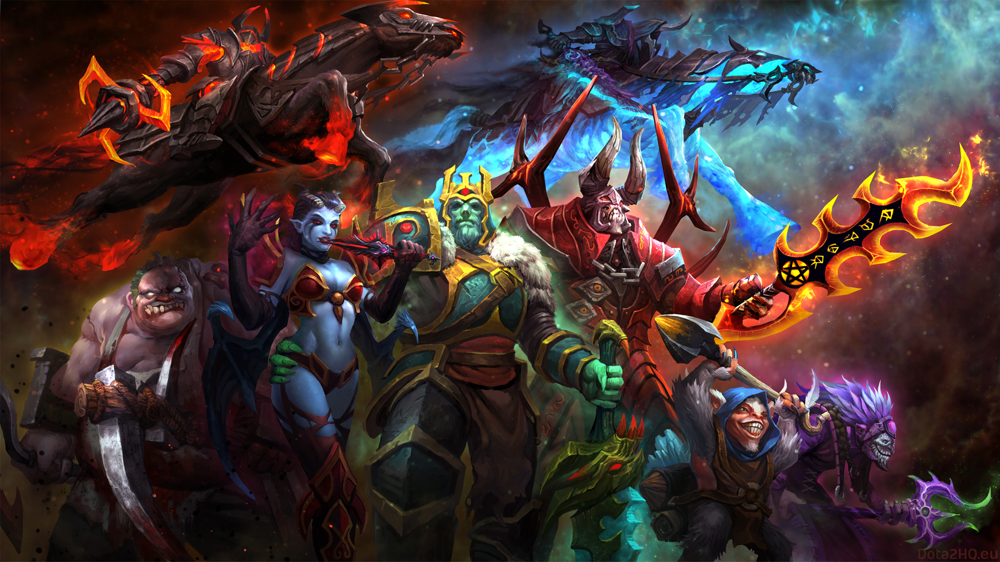
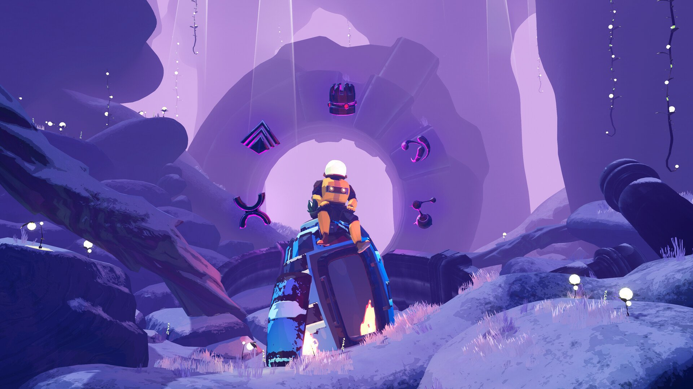

My favourite games
Introduction
In this webpage you will be able to read about my favourite videogames of all time, which Im really excited to share with you some toughts, opinions and observations.
Games List
Hades

This game is one of the best rougelikes in the market, its charming characters, superb gameplay and lore makes it addictive and infinite fun, also the art has a particular style that for sure will make your eyes appreciate the details. Steam Page ¬
Satisfactory
This game forces you to work, all the logical and OCD brain-work will scratch an itch that not any managment game has, if you like management simulators I highly recommend this game. Steam Page ¬
Planet Coaster
It is the best succesor of the original Roller Coaster Tycoon games, with decent graphics and expansive community, which will let you explore all your creative desires and perhaps frustrated Roller Coaster designer dreams. Steam Page ¬
Dota
This MOBA is one of the hardest games to play, the learning curve is really steep, but playing with friend can end in really fun times or having ending fighting with your bros. Steam Page ¬
Risk of Rain 2
Another superb rougelike that scratches the 3D bullethell itch you can have, even if it is taxing on your system this game will keep you playing for at leat 3 hours per session, it can sometimes be kind of harsh on new players, but slowly you can get the hang of it. Steam Page ¬
Conclusion
These are my personal favourites, lately I have been obsessed with rougelike games which have a really nice gameplay loop, which is rewarding for the average player, I dont like games that are frustrating like Elden Ring or Dark Souls, I prefer too keep it simple and fun.